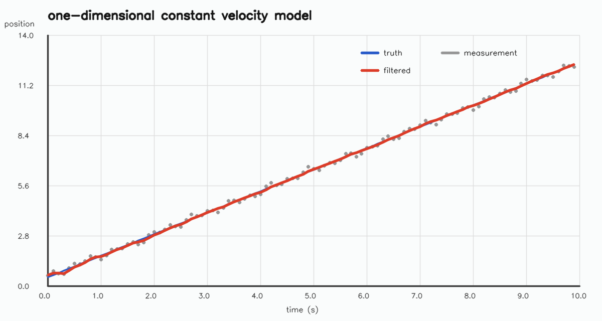
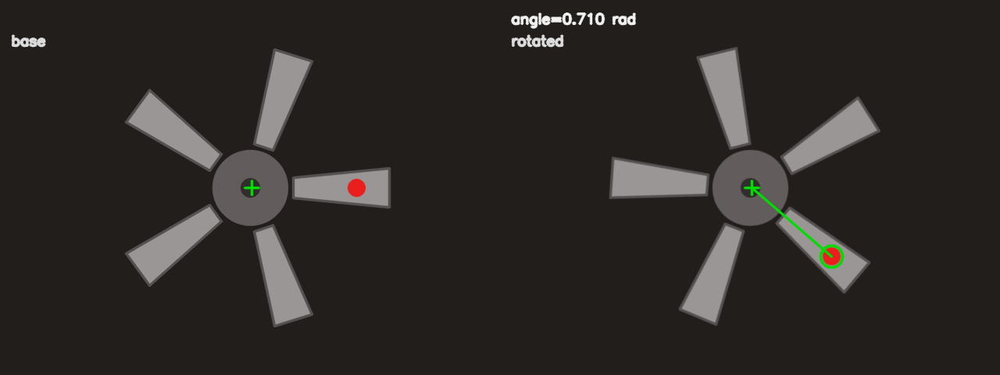
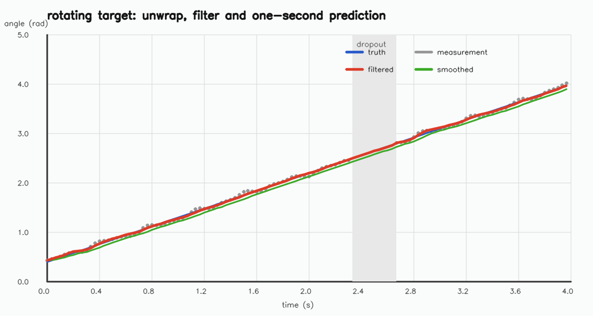
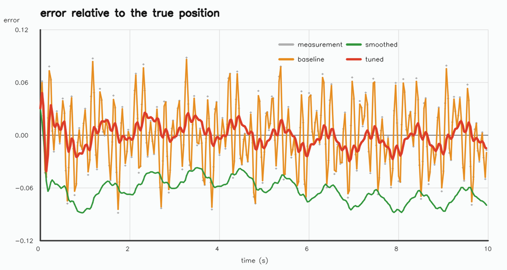
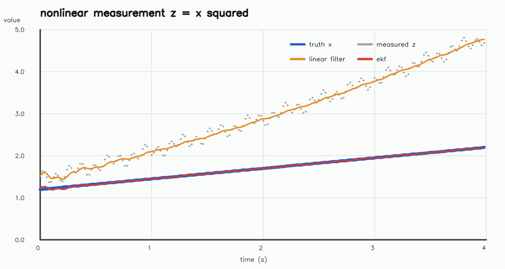

卡尔曼滤波与跟踪
这一部分从预测与校正的循环出发，先用一维匀速模型写出卡尔曼滤波的
手工版本，再用 cv::KalmanFilter 处理角度序列；随后在
合成旋转目标上完成角度测量、角度展开、丢帧处理与一秒预测；最后读
一段完整的跟踪骨架，用数据比较参数、平滑与预测时长。8.1–8.3 要求
掌握，8.4 要求能逐行解释并提出可验证的修改，8.5 为了解。
需要先读 1.1，知道
Mat 的浅拷贝与 clone；读
1.2，会按路径读图并检查
empty；读 1.3，
会取 ROI；读 1.4，会做灰度与
颜色转换；读 1.5，会绘制标注；
读 2.3，会用
inRange 与形态学；读
2.6，会用
warpAffine；读
3.1，会用
findContours 取轮廓；读
3.2，会用
contourArea 等轮廓几何；读
3.4，会算轮廓矩与重心。
下面的命令在课程文件夹 lessons/opencv（本页所在目录）下执行。
/tmp 是系统存放临时文件的目录，电脑重启后可能被清空。
如果没有按第 0 部分 0.1 准备过练习目录，或者准备之后重启过电脑，
先执行下面几行，再开始这一部分：
rm -rf /tmp/opencv-course
mkdir -p /tmp/opencv-course
cp -r 示例代码 素材 /tmp/opencv-course/
cd /tmp/opencv-course/示例代码
第一行会删除整个练习副本，路径不要改成自己的目录。复制完成后，
用 pwd 确认当前目录是 /tmp/opencv-course/示例代码。
8.1卡尔曼滤波的直觉
滤波要解决的是同一件事：模型给出一个预测，传感器给出一个带噪声的 观测，怎样把两者合成一个更可信的估计。卡尔曼滤波把估计写成状态向量 与协方差矩阵，按固定顺序做预测与校正，每一步都同时更新估计值和它的 不确定程度。本课用一维匀速运动建立这套记号，并写出不依赖 OpenCV 滤波类的最小实现。
状态、预测与校正
状态向量 x 收集要跟踪的量。一维匀速运动取
x = [p, v]^T，p 是位置，v 是
速度。协方差矩阵 P 描述这些量的不确定程度以及它们之间
的相关性；P 的对角线是方差，非对角线是协方差。初值时
可以给一个估计和一个较大的 P，让后续观测把状态拉回来。
预测步假设状态按运动模型变化。匀速模型的转移矩阵是
F = [[1, dt], [0, 1]]，预测写成
x⁻ = F x。过程噪声 Q 表示模型没有描述的
加速度、转弯或振动；预测协方差为
P⁻ = F P F^T + Q。上标负号表示“还没有看当前观测”。
校正步把观测 z 纳入。观测矩阵 H 说明状态
怎样产生观测；本例只测位置，所以 H = [1, 0]。先算新息
y = z - H x⁻，再算新息协方差
S = H P⁻ H^T + R，其中 R 是观测噪声协方差。
卡尔曼增益为 K = P⁻ H^T S^(-1)，校正结果为
x = x⁻ + K y，
P = (I - K H) P⁻。
增益 K 决定相信模型还是相信观测。R 小表示
观测可靠，K 接近 1，估计主要跟随观测；P⁻ 小
表示模型可靠，K 接近 0，估计主要保留预测。两个矩阵不是
越小越好，它们要与实际噪声匹配；不匹配时，滤波器会过度平滑或过度
抖动。
一维匀速模型
下面的程序取 dt=0.1，真实轨迹为
p(t)=0.5+1.2t，观测在真实值上叠加三个正弦项。过程噪声
强度 q=0.02，观测方差 r=0.04。程序从
[0.7, 0] 出发，初值协方差取单位阵，逐步执行预测与校正，
最后打印原始观测与滤波结果的均方根误差。
程序只使用 cv::Mat 做矩阵运算，不调用滤波类，便于逐行
对照公式。真实轨迹是直线，观测噪声是确定性的正弦叠加，因此每次
运行的结果一致。
完整程序：
#include <algorithm>
#include <cmath>
#include <iomanip>
#include <iostream>
#include <string>
#include <vector>
#include <opencv2/core.hpp>
#include <opencv2/imgproc.hpp>
#include <opencv2/imgcodecs.hpp>
namespace {
cv::Mat makePlot(int width, int height, double x_max, double y_max,
const std::string& title) {
cv::Mat canvas(height, width, CV_8UC3, cv::Scalar(252, 252, 250));
const int left = 95;
const int right = 45;
const int top = 70;
const int bottom = 70;
const cv::Scalar axis(60, 60, 60);
const cv::Scalar grid(220, 220, 220);
for (int i = 0; i <= 10; ++i) {
const int x = left + (width - left - right) * i / 10;
cv::line(canvas, cv::Point(x, top), cv::Point(x, height - bottom),
grid, 1, cv::LINE_AA);
cv::putText(canvas, cv::format("%.1f", x_max * i / 10.0),
cv::Point(x - 18, height - bottom + 24),
cv::FONT_HERSHEY_SIMPLEX, 0.45, axis, 1, cv::LINE_AA);
}
for (int i = 0; i <= 5; ++i) {
const int y = height - bottom - (height - top - bottom) * i / 5;
cv::line(canvas, cv::Point(left, y), cv::Point(width - right, y),
grid, 1, cv::LINE_AA);
cv::putText(canvas, cv::format("%.1f", y_max * i / 5.0),
cv::Point(35, y + 5), cv::FONT_HERSHEY_SIMPLEX, 0.45,
axis, 1, cv::LINE_AA);
}
cv::line(canvas, cv::Point(left, top), cv::Point(left, height - bottom),
axis, 2, cv::LINE_AA);
cv::line(canvas, cv::Point(left, height - bottom),
cv::Point(width - right, height - bottom), axis, 2, cv::LINE_AA);
cv::putText(canvas, title, cv::Point(left, 38),
cv::FONT_HERSHEY_SIMPLEX, 0.8, cv::Scalar(20, 20, 20), 2,
cv::LINE_AA);
cv::putText(canvas, "time (s)", cv::Point(width / 2 - 30, height - 18),
cv::FONT_HERSHEY_SIMPLEX, 0.5, axis, 1, cv::LINE_AA);
cv::putText(canvas, "position", cv::Point(8, top - 18),
cv::FONT_HERSHEY_SIMPLEX, 0.5, axis, 1, cv::LINE_AA);
return canvas;
}
cv::Point toPixel(double x, double y, double x_max, double y_max,
int width, int height) {
const int left = 95;
const int right = 45;
const int top = 70;
const int bottom = 70;
const int px = left + cvRound((width - left - right) * x / x_max);
const int py = height - bottom -
cvRound((height - top - bottom) * y / y_max);
return cv::Point(px, py);
}
void legend(cv::Mat& canvas, int x, int y, const cv::Scalar& color,
const std::string& text) {
cv::line(canvas, cv::Point(x, y), cv::Point(x + 34, y), color, 3,
cv::LINE_AA);
cv::putText(canvas, text, cv::Point(x + 44, y + 5),
cv::FONT_HERSHEY_SIMPLEX, 0.5, cv::Scalar(40, 40, 40), 1,
cv::LINE_AA);
}
} // namespace
int main() {
const int count = 100;
const double dt = 0.1;
const double x0 = 0.5;
const double v0 = 1.2;
const double q = 0.02;
const double r = 0.04;
std::vector<double> truth(count);
std::vector<double> measured(count);
std::vector<double> filtered(count);
cv::Mat state = (cv::Mat_<double>(2, 1) << x0 + 0.2, 0.0);
cv::Mat P = cv::Mat::eye(2, 2, CV_64F);
const cv::Mat F = (cv::Mat_<double>(2, 2) << 1.0, dt, 0.0, 1.0);
const cv::Mat H = (cv::Mat_<double>(1, 2) << 1.0, 0.0);
const cv::Mat Q = (cv::Mat_<double>(2, 2) <<
q * dt * dt * dt * dt / 4.0, q * dt * dt * dt / 2.0,
q * dt * dt * dt / 2.0, q * dt * dt);
for (int k = 0; k < count; ++k) {
const double t = k * dt;
truth[k] = x0 + v0 * t;
measured[k] = truth[k] + 0.15 * std::sin(1.7 * k) +
0.10 * std::cos(0.9 * k) + 0.05 * std::sin(0.3 * k);
state = F * state;
P = F * P * F.t() + Q;
const cv::Mat S = H * P * H.t() + r;
const cv::Mat K = P * H.t() * S.inv();
const cv::Mat residual = (cv::Mat_<double>(1, 1) << measured[k]) -
H * state;
state = state + K * residual;
P = (cv::Mat::eye(2, 2, CV_64F) - K * H) * P;
filtered[k] = state.at<double>(0, 0);
}
double raw_sq = 0.0;
double filtered_sq = 0.0;
for (int k = 0; k < count; ++k) {
const double e_raw = measured[k] - truth[k];
const double e_filtered = filtered[k] - truth[k];
raw_sq += e_raw * e_raw;
filtered_sq += e_filtered * e_filtered;
}
const double raw_rmse = std::sqrt(raw_sq / count);
const double filtered_rmse = std::sqrt(filtered_sq / count);
cv::Mat canvas = makePlot(1200, 640, count * dt, 14.0,
"one-dimensional constant velocity model");
std::vector<cv::Point> true_points;
std::vector<cv::Point> filtered_points;
for (int k = 0; k < count; ++k) {
true_points.push_back(toPixel(k * dt, truth[k], count * dt, 14.0,
1200, 640));
filtered_points.push_back(toPixel(k * dt, filtered[k], count * dt,
14.0, 1200, 640));
cv::circle(canvas, toPixel(k * dt, measured[k], count * dt, 14.0,
1200, 640), 3, cv::Scalar(150, 150, 150),
cv::FILLED, cv::LINE_AA);
}
cv::polylines(canvas, true_points, false, cv::Scalar(200, 90, 40), 2,
cv::LINE_AA);
cv::polylines(canvas, filtered_points, false, cv::Scalar(40, 60, 220), 3,
cv::LINE_AA);
legend(canvas, 720, 105, cv::Scalar(200, 90, 40), "truth");
legend(canvas, 880, 105, cv::Scalar(150, 150, 150), "measurement");
legend(canvas, 720, 140, cv::Scalar(40, 60, 220), "filtered");
const bool saved = cv::imwrite("../素材/synth_kalman_1d.png", canvas);
std::cout << std::fixed << std::setprecision(4);
std::cout << "steps = " << count << '\n';
std::cout << "raw_rmse = " << raw_rmse << '\n';
std::cout << "filtered_rmse = " << filtered_rmse << '\n';
std::cout << "final_position = " << state.at<double>(0, 0) << '\n';
std::cout << "final_velocity = " << state.at<double>(1, 0) << '\n';
std::cout << "saved synth_kalman_1d.png " << canvas.cols << "x"
<< canvas.rows << ": " << (saved ? "yes" : "no") << '\n';
return 0;
}在 示例代码 目录下编译并运行：
g++ -std=c++17 -Wall -Wextra 8.1-kalman_1d.cpp -o kalman_1d \
$(pkg-config --cflags --libs opencv4)
./kalman_1dsteps = 100 raw_rmse = 0.1330 filtered_rmse = 0.0380 final_position = 12.3792 final_velocity = 1.1971 saved synth_kalman_1d.png 1200x640: yes
观测的 RMSE 为 0.1330，滤波后降到
0.0380，说明模型与噪声参数基本匹配。最终位置
12.3792 与真值 12.38 只差约
0.0008；最终速度 1.1971 接近真值
1.2。前几步误差较大，是因为初值 0.7 与
真值 0.5 有偏差，协方差又给了观测足够的权重，滤波器
需要几步才能收敛。

把例题中观测噪声的三个幅度分别改为 0.075、
0.05、0.025，其余参数不变。打印
raw_rmse、filtered_rmse 与
final_velocity。
预期输出：
raw_rmse = 0.0665 filtered_rmse = 0.0239 final_velocity = 1.1985
看答案
观测噪声减半后，原始 RMSE 从 0.1330 降到
0.0665，滤波后的 RMSE 从 0.0380 降到
0.0239。速度估计也更接近真值，末值为
1.1985。滤波器的参数没有改，改善来自输入噪声
变小；这说明比较滤波效果时，必须先固定观测序列。
#include <cmath>
#include <iomanip>
#include <iostream>
#include <opencv2/core.hpp>
int main() {
const int count = 100;
const double dt = 0.1;
const double q = 0.02;
const double r = 0.04;
cv::Mat state = (cv::Mat_<double>(2, 1) << 0.7, 0.0);
cv::Mat P = cv::Mat::eye(2, 2, CV_64F);
const cv::Mat F = (cv::Mat_<double>(2, 2) << 1.0, dt, 0.0, 1.0);
const cv::Mat H = (cv::Mat_<double>(1, 2) << 1.0, 0.0);
const cv::Mat Q = (cv::Mat_<double>(2, 2) <<
q * dt * dt * dt * dt / 4.0, q * dt * dt * dt / 2.0,
q * dt * dt * dt / 2.0, q * dt * dt);
double raw_sq = 0.0;
double filtered_sq = 0.0;
for (int k = 0; k < count; ++k) {
const double truth = 0.5 + 1.2 * (k * dt);
const double measured = truth + 0.075 * std::sin(1.7 * k) +
0.05 * std::cos(0.9 * k) +
0.025 * std::sin(0.3 * k);
state = F * state;
P = F * P * F.t() + Q;
const cv::Mat S = H * P * H.t() + r;
const cv::Mat K = P * H.t() * S.inv();
const cv::Mat residual = (cv::Mat_<double>(1, 1) << measured) -
H * state;
state = state + K * residual;
P = (cv::Mat::eye(2, 2, CV_64F) - K * H) * P;
raw_sq += (measured - truth) * (measured - truth);
const double error = state.at<double>(0, 0) - truth;
filtered_sq += error * error;
}
std::cout << std::fixed << std::setprecision(4);
std::cout << "raw_rmse = " << std::sqrt(raw_sq / count) << '\n';
std::cout << "filtered_rmse = " << std::sqrt(filtered_sq / count) << '\n';
std::cout << "final_velocity = " << state.at<double>(1, 0) << '\n';
return 0;
}raw_rmse = 0.0665 filtered_rmse = 0.0239 final_velocity = 1.1985
常见错误
过程噪声过大。Q 表示模型误差，不是观测误差。
把 Q 放大到与观测噪声同一量级，预测协方差会迅速变大，
增益接近 1，滤波结果几乎复制观测，失去平滑作用。
观测噪声过大。R 过大时增益过小，滤波器更相信
直线模型。目标真的转弯或加速时，估计会明显滞后；对旋转目标，表现
为角度总比真实值滞后。
初值协方差过小。如果 P 的初值接近零，滤波器认为
初始状态几乎确定，后续观测很难改变它。初值有偏差时，估计会长时间
停在错误位置。给一个较大的初始 P，让前几步观测把状态
拉回来，通常更安全。
时间步不一致。F 中的 dt 必须与
数据的时间间隔一致。按 30 帧每秒采到的角度，若仍用
dt=0.1，速度与预测都会按错误的时间尺度计算；这类错误
不会报编译错，只会让曲线缓慢偏离。
8.2cv::KalmanFilter 的状态与矩阵
8.1 的手工版本把公式摊开，便于检查每一步；实际代码通常直接用
cv::KalmanFilter。这个类保存状态、协方差与五个矩阵，
提供 predict() 与 correct() 两个入口。
本课说明构造参数、矩阵含义与调用顺序，并用带噪声的角度序列检查
状态与协方差的变化。
构造与矩阵
构造函数为
cv::KalmanFilter kf(stateDim, measureDim, controlDim, type)。
二维状态、一维观测、无控制量时写
cv::KalmanFilter kf(2, 1, 0, CV_32F)。第四个参数决定
矩阵元素类型，常用 CV_32F 或 CV_64F；一旦
选定，后续赋值的矩阵必须使用同一类型，否则运行时会因类型不匹配
出错。
需要设置的成员有：
transitionMatrix 是 F，尺寸
stateDim×stateDim；
measurementMatrix 是 H，尺寸
measureDim×stateDim；
processNoiseCov 是 Q，尺寸
stateDim×stateDim；
measurementNoiseCov 是 R，尺寸
measureDim×measureDim。
errorCovPost 是校正后的 P，
statePost 是校正后的状态；类还提供
statePre、errorCovPre 与
gain，分别保存预测状态、预测协方差与本步增益。
statePost 必须显式赋初值。常见的写法是用第一帧观测
填位置分量，速度分量取 0 或一个粗估；errorCovPost
取单位阵或对角阵。若不给初值，状态为零、协方差为零，滤波器会把
初始状态当成完全确定。默认的过程噪声协方差是单位阵，
predict() 之后预测协方差至少为 Q，后续
观测仍能改变估计；只有把 Q 也设为零，估计才会几乎
不再随观测变化。
predict 与 correct
每个时间步先调用 kf.predict()，它按
transitionMatrix 推进状态并更新协方差；然后构造观测
向量并调用 kf.correct(measurement)。观测向量的尺寸必须
是 measureDim×1，类型与构造参数一致。校正后的状态从
kf.statePost 读取，不要继续使用 statePre。
没有观测时只调用 predict()，不要用上一帧观测重复校正。
重复校正会把旧观测当成新证据，协方差被错误压小，滤波器对模型过度
自信。丢帧期间让状态按速度外推，重新拿到观测后再校正，是跟踪器的
基本处理方式。
角度是周期量，直接送进滤波器会在 ±π 附近出现跳变。
8.3 会先在测量层展开角度，再送入滤波；如果省略展开，状态会在
π 与 -π 之间来回跳，速度估计出现尖峰。
程序构造 150 帧角度序列，真实角速度为 1.0 rad/s，
初角 0.2 rad，观测叠加两个正弦项。状态取
[角度, 角速度]，观测只含角度。程序每 30 帧打印一次
状态与协方差对角线，最后打印 RMSE 与两个矩阵。
完整程序：
#include <cmath>
#include <iomanip>
#include <iostream>
#include <opencv2/core.hpp>
#include <opencv2/video/tracking.hpp>
int main() {
const int count = 150;
const float dt = 0.05f;
const float q = 0.05f;
const float r = 0.02f;
cv::KalmanFilter kf(2, 1, 0, CV_32F);
kf.transitionMatrix = (cv::Mat_<float>(2, 2) <<
1.0f, dt,
0.0f, 1.0f);
kf.measurementMatrix = (cv::Mat_<float>(1, 2) << 1.0f, 0.0f);
kf.processNoiseCov = (cv::Mat_<float>(2, 2) <<
q * dt * dt * dt * dt / 4.0f, q * dt * dt * dt / 2.0f,
q * dt * dt * dt / 2.0f, q * dt * dt);
kf.measurementNoiseCov = (cv::Mat_<float>(1, 1) << r);
kf.errorCovPost = cv::Mat::eye(2, 2, CV_32F) * 1.0f;
kf.statePost = (cv::Mat_<float>(2, 1) << 0.2f, 0.0f);
double raw_sq = 0.0;
double filtered_sq = 0.0;
std::cout << std::fixed << std::setprecision(4);
for (int k = 0; k < count; ++k) {
const float t = k * dt;
const float truth = 0.2f + 1.0f * t;
const float noise = 0.03f * std::sin(1.3f * k) +
0.02f * std::cos(0.7f * k);
const float measured = truth + noise;
kf.predict();
cv::Mat measurement = (cv::Mat_<float>(1, 1) << measured);
kf.correct(measurement);
const float estimate = kf.statePost.at<float>(0, 0);
const double e_raw = measured - truth;
const double e_filtered = estimate - truth;
raw_sq += e_raw * e_raw;
filtered_sq += e_filtered * e_filtered;
if (k % 30 == 0 || k == count - 1) {
std::cout << "step=" << std::setw(3) << k
<< " angle=" << std::setw(8) << estimate
<< " omega=" << std::setw(8)
<< kf.statePost.at<float>(1, 0)
<< " p00=" << std::setw(8)
<< kf.errorCovPost.at<float>(0, 0)
<< " p11=" << std::setw(8)
<< kf.errorCovPost.at<float>(1, 1) << '\n';
}
}
std::cout << std::setprecision(6);
std::cout << "raw_rmse = " << std::sqrt(raw_sq / count) << '\n';
std::cout << "filtered_rmse = " << std::sqrt(filtered_sq / count) << '\n';
std::cout << std::setprecision(4);
std::cout << "final_angle = " << kf.statePost.at<float>(0, 0) << '\n';
std::cout << "final_omega = " << kf.statePost.at<float>(1, 0) << '\n';
std::cout << "transitionMatrix =\n" << kf.transitionMatrix << '\n';
std::cout << "measurementMatrix =\n" << kf.measurementMatrix << '\n';
return 0;
}在 示例代码 目录下编译并运行：
g++ -std=c++17 -Wall -Wextra 8.2-kalman_filter.cpp -o kalman_filter \
$(pkg-config --cflags --libs opencv4)
./kalman_filterstep= 0 angle= 0.2196 omega= 0.0010 p00= 0.0196 p11= 0.9977 step= 30 angle= 1.6992 omega= 0.9971 p00= 0.0025 p11= 0.0046 step= 60 angle= 3.1989 omega= 0.9996 p00= 0.0017 p11= 0.0028 step= 90 angle= 4.7018 omega= 1.0019 p00= 0.0017 p11= 0.0028 step=120 angle= 6.1991 omega= 0.9990 p00= 0.0017 p11= 0.0028 step=149 angle= 7.6458 omega= 0.9961 p00= 0.0017 p11= 0.0027 raw_rmse = 0.025733 filtered_rmse = 0.011419 final_angle = 7.6458 final_omega = 0.9961 transitionMatrix = [1, 0.050000001; 0, 1] measurementMatrix = [1, 0]
第 0 步的角速度只有 0.0010，因为初值速度取 0，协方差
还很大；到第 30 步，角速度已收敛到 0.9971，位置方差
p00 从 0.0196 降到
0.0025。之后 p00 与 p11 基本
稳定在 0.0017 与 0.0028，说明滤波器进入
稳态；状态行的最后一条 step=149 是序列末帧。
观测的 RMSE 为 0.025733，滤波后为
0.011419，约减半。
输出末尾的两个矩阵是程序主动打印的
transitionMatrix 与 measurementMatrix。
前者第一行第二列是 dt=0.05，后者第一行第一列是 1，
第二列为 0：状态的两个分量中只有角度被观测到。
把例题中的观测噪声方差 r 从 0.02 改为
0.08，其余不变。打印 raw_rmse、
filtered_rmse 与 final_omega。
预期输出：
raw_rmse = 0.025733 filtered_rmse = 0.020790 final_omega = 0.9982
看答案
观测噪声方差变大后，滤波器更相信匀速模型。原始 RMSE 仍是
0.025733，因为观测序列没有变；滤波后的 RMSE 从
0.011419 升到 0.020790，末速度
0.9982 仍接近真值。这个对比说明 R
不是固定常数：它应当随传感器与场景变化，盲目沿用小值会让滤波器
过度跟随噪声。
#include <cmath>
#include <iomanip>
#include <iostream>
#include <opencv2/core.hpp>
#include <opencv2/video/tracking.hpp>
int main() {
const int count = 150;
const float dt = 0.05f;
const float q = 0.05f;
const float r = 0.08f;
cv::KalmanFilter kf(2, 1, 0, CV_32F);
kf.transitionMatrix = (cv::Mat_<float>(2, 2) <<
1.0f, dt,
0.0f, 1.0f);
kf.measurementMatrix = (cv::Mat_<float>(1, 2) << 1.0f, 0.0f);
kf.processNoiseCov = (cv::Mat_<float>(2, 2) <<
q * dt * dt * dt * dt / 4.0f, q * dt * dt * dt / 2.0f,
q * dt * dt * dt / 2.0f, q * dt * dt);
kf.measurementNoiseCov = (cv::Mat_<float>(1, 1) << r);
kf.errorCovPost = cv::Mat::eye(2, 2, CV_32F);
kf.statePost = (cv::Mat_<float>(2, 1) << 0.2f, 0.0f);
double raw_sq = 0.0;
double filtered_sq = 0.0;
for (int k = 0; k < count; ++k) {
const float t = k * dt;
const float truth = 0.2f + 1.0f * t;
const float measured = truth + 0.03f * std::sin(1.3f * k) +
0.02f * std::cos(0.7f * k);
kf.predict();
kf.correct((cv::Mat_<float>(1, 1) << measured));
const float estimate = kf.statePost.at<float>(0, 0);
raw_sq += (measured - truth) * (measured - truth);
filtered_sq += (estimate - truth) * (estimate - truth);
}
std::cout << std::fixed << std::setprecision(6);
std::cout << "raw_rmse = " << std::sqrt(raw_sq / count) << '\n';
std::cout << "filtered_rmse = " << std::sqrt(filtered_sq / count) << '\n';
std::cout << std::setprecision(4);
std::cout << "final_omega = " << kf.statePost.at<float>(1, 0) << '\n';
return 0;
}raw_rmse = 0.025733 filtered_rmse = 0.020790 final_omega = 0.9982
常见错误
矩阵尺寸不匹配。H 的行数等于观测维数，列数等于
状态维数；Q 与 P 都是方阵，阶数等于状态
维数。尺寸写错时，predict 或 correct
会在矩阵乘法处断言失败，错误信息通常只指出维度，不指出是哪一个
矩阵，需要逐个核对。
观测矩阵类型不匹配。构造时用 CV_32F，后续用
CV_64F 的 Mat_ 赋值，编译能通过，运行时
才报类型错误。整个滤波器统一用同一种浮点类型，输出的数字与
矩阵打印也会更整齐。
校正观测的维度错误。correct 要求
measureDim×1 的列向量；把标量直接传入，或传入
1×measureDim 的行向量，都会导致尺寸不符。构造
cv::Mat_<float>(1, 1) << value 是稳妥的写法。
角度未展开。观测角从 3.13 跳到
-3.13 时，数值差约 -6.26，滤波器会把它
当成一次剧烈的反向运动。先展开再送入滤波，或在测量层判断跨周，
才能得到连续的角速度。
8.3旋转目标：角度测量、展开与预测
跟踪旋转目标时，观测来自图像：先找到目标上的标记，再由标记相对
旋转中心的方向求角度。角度测量有两个容易出错的地方，一是旋转中心
必须稳定，二是角度在 ±π 处会跳变。本课用合成的五叶
旋转目标演示从轮廓到角度的完整过程，再把连续角度送入 8.1 的模型，
处理丢帧并外推一秒。
从轮廓到角度
合成目标由五片灰色叶片、中心轮毂和一个红色标记组成。红色标记的
位置随目标旋转，颜色与叶片区分明显，适合用 HSV 阈值提取。程序先
把图像转到 HSV 空间，分别取红色在色相两端的区间
0–10 与 170–179，合并掩码后做一次开运算
去掉小噪点，再取面积最大的轮廓。
轮廓的重心由矩计算：
cx = m10/m00，cy = m01/m00。重心相对
旋转中心的向量为 (cx-c0x, cy-c0y)，角度用
atan2(dy, dx) 求得，范围为 [-π, π]。
图像坐标的 y 轴向下，所以角度增大对应屏幕上顺时针
旋转；这与数学课本的逆时针方向相反，写方向判断时要统一约定。
零点取 +x 方向。若目标安装方向不同，可以在结果上加减
一个固定偏置，或改用另一个基准方向的 atan2，例如
atan2(-dx, dy) 把零点转到 +y 方向。
重要的不是零点选在哪里，而是测量、滤波与预测使用同一个约定。
拟合圆与方向
旋转中心不能假设为图像中心。程序从目标轮廓点拟合圆，用圆心作为
旋转中心。最小二乘圆拟合把圆方程
x²+y² = A x + B y + C 写成关于
(A,B,C) 的线性方程，对每个轮廓点取一行，解超定方程
后得到圆心 (A/2, B/2) 与半径
sqrt(C + A²/4 + B²/4)。
直接以像素坐标建立方程时，x²+y² 的数值远大于
x、y，法方程容易病态。程序先减去轮廓点的
均值，再对平移后的坐标求解，最后把均值加回圆心。这个处理不改变
几何结果，只改善数值条件。程序把掩码中面积超过 100 的全部轮廓点
送入拟合；掩码的三个通道范围 55–210 包含五片叶片与中心
轮毂，不含红色标记。因此得到的半径是叶片外缘与轮毂外缘的混合
平均，既不是叶片外缘半径，也不是轮毂半径。
程序生成基准目标，把红色标记放在 +x 方向，然后整体
旋转 0.700 rad。它先在基准帧上拟合圆心，再在旋转帧上
提取红色标记、计算重心与角度，最后把基准帧与旋转帧并排保存，便于
检查圆心、标记与角度文字。
完整程序：
#include <cmath>
#include <iomanip>
#include <iostream>
#include <string>
#include <vector>
#include <opencv2/core.hpp>
#include <opencv2/imgproc.hpp>
#include <opencv2/imgcodecs.hpp>
namespace {
constexpr int kWidth = 640;
constexpr int kHeight = 480;
const double kPi = 3.14159265358979323846;
const cv::Point2f kCenter(320.0f, 240.0f);
cv::Mat makeRotor() {
cv::Mat image(kHeight, kWidth, CV_8UC3, cv::Scalar(28, 30, 34));
for (int i = 0; i < 5; ++i) {
const double a = i * 2.0 * kPi / 5.0;
const double ca = std::cos(a);
const double sa = std::sin(a);
const double root = 55.0;
const double tip = 178.0;
const double root_half = 13.0;
const double tip_half = 25.0;
std::vector<cv::Point> blade;
const double radii[4] = {root, root, tip, tip};
const double halves[4] = {-root_half, root_half, tip_half, -tip_half};
for (int j = 0; j < 4; ++j) {
const double x = radii[j] * ca - halves[j] * sa;
const double y = radii[j] * sa + halves[j] * ca;
blade.push_back(cv::Point(cvRound(kCenter.x + x),
cvRound(kCenter.y + y)));
}
cv::fillConvexPoly(image, blade, cv::Scalar(150, 150, 155),
cv::LINE_AA);
cv::polylines(image, blade, true, cv::Scalar(80, 80, 86), 2,
cv::LINE_AA);
}
cv::circle(image, kCenter, 48, cv::Scalar(92, 92, 98), cv::FILLED,
cv::LINE_AA);
cv::circle(image, kCenter, 12, cv::Scalar(45, 45, 50), cv::FILLED,
cv::LINE_AA);
cv::circle(image, cv::Point(cvRound(kCenter.x + 136.0f),
cvRound(kCenter.y)), 11,
cv::Scalar(30, 30, 235), cv::FILLED, cv::LINE_AA);
return image;
}
cv::Mat rotateRotor(const cv::Mat& base, double angle) {
const cv::Mat m = cv::getRotationMatrix2D(
kCenter, -angle * 180.0 / kPi, 1.0);
cv::Mat rotated;
cv::warpAffine(base, rotated, m, base.size(), cv::INTER_LINEAR,
cv::BORDER_CONSTANT, cv::Scalar(28, 30, 34));
return rotated;
}
bool fitCircle(const std::vector<cv::Point>& points, cv::Point2f& center,
double& radius) {
if (points.size() < 3) {
return false;
}
double mean_x = 0.0;
double mean_y = 0.0;
for (const cv::Point& p : points) {
mean_x += p.x;
mean_y += p.y;
}
mean_x /= points.size();
mean_y /= points.size();
cv::Mat A(static_cast<int>(points.size()), 3, CV_64F);
cv::Mat b(static_cast<int>(points.size()), 1, CV_64F);
for (std::size_t i = 0; i < points.size(); ++i) {
const double u = points[i].x - mean_x;
const double v = points[i].y - mean_y;
A.at<double>(static_cast<int>(i), 0) = u;
A.at<double>(static_cast<int>(i), 1) = v;
A.at<double>(static_cast<int>(i), 2) = 1.0;
b.at<double>(static_cast<int>(i), 0) = u * u + v * v;
}
cv::Mat solution;
if (!cv::solve(A, b, solution, cv::DECOMP_SVD)) {
return false;
}
const double cx = mean_x + solution.at<double>(0, 0) / 2.0;
const double cy = mean_y + solution.at<double>(1, 0) / 2.0;
const double constant = solution.at<double>(2, 0);
const double a = solution.at<double>(0, 0);
const double b_value = solution.at<double>(1, 0);
const double r2 = constant + a * a / 4.0 + b_value * b_value / 4.0;
if (r2 <= 0.0) {
return false;
}
center = cv::Point2f(static_cast<float>(cx), static_cast<float>(cy));
radius = std::sqrt(r2);
return true;
}
bool estimateCenter(const cv::Mat& frame, cv::Point2f& center,
double& radius) {
cv::Mat mask;
cv::inRange(frame, cv::Scalar(55, 55, 55), cv::Scalar(210, 210, 210),
mask);
std::vector<std::vector<cv::Point>> contours;
cv::findContours(mask, contours, cv::RETR_EXTERNAL,
cv::CHAIN_APPROX_NONE);
if (contours.empty()) {
return false;
}
std::vector<cv::Point> points;
for (const std::vector<cv::Point>& contour : contours) {
if (cv::contourArea(contour) > 100.0) {
points.insert(points.end(), contour.begin(), contour.end());
}
}
return fitCircle(points, center, radius);
}
bool measureAngle(const cv::Mat& frame, const cv::Point2f& center,
double& angle, cv::Point2f& marker) {
cv::Mat hsv;
cv::cvtColor(frame, hsv, cv::COLOR_BGR2HSV);
cv::Mat low;
cv::Mat high;
cv::inRange(hsv, cv::Scalar(0, 120, 100), cv::Scalar(10, 255, 255), low);
cv::inRange(hsv, cv::Scalar(170, 120, 100), cv::Scalar(179, 255, 255),
high);
cv::Mat mask;
cv::bitwise_or(low, high, mask);
cv::morphologyEx(mask, mask, cv::MORPH_OPEN,
cv::getStructuringElement(cv::MORPH_ELLIPSE,
cv::Size(3, 3)));
std::vector<std::vector<cv::Point>> contours;
cv::findContours(mask.clone(), contours, cv::RETR_EXTERNAL,
cv::CHAIN_APPROX_SIMPLE);
double best_area = 0.0;
bool found = false;
for (const std::vector<cv::Point>& contour : contours) {
const double area = cv::contourArea(contour);
if (area < 60.0 || area <= best_area) {
continue;
}
const cv::Moments m = cv::moments(contour);
if (m.m00 <= 0.0) {
continue;
}
marker = cv::Point2f(static_cast<float>(m.m10 / m.m00),
static_cast<float>(m.m01 / m.m00));
angle = std::atan2(static_cast<double>(marker.y - center.y),
static_cast<double>(marker.x - center.x));
best_area = area;
found = true;
}
return found;
}
void drawMeasurementPanel(cv::Mat& panel, const cv::Mat& frame,
const std::string& label, bool detected,
const cv::Point2f& center, const cv::Point2f& marker,
double angle) {
frame.copyTo(panel);
cv::drawMarker(panel, center, cv::Scalar(0, 220, 0), cv::MARKER_CROSS,
18, 2, cv::LINE_AA);
if (detected) {
cv::circle(panel, marker, 14, cv::Scalar(0, 220, 0), 2, cv::LINE_AA);
cv::line(panel, center, marker, cv::Scalar(0, 220, 0), 2,
cv::LINE_AA);
cv::putText(panel, cv::format("angle=%.3f rad", angle),
cv::Point(14, 30), cv::FONT_HERSHEY_SIMPLEX, 0.6,
cv::Scalar(240, 240, 240), 2, cv::LINE_AA);
}
cv::putText(panel, label, cv::Point(14, 58),
cv::FONT_HERSHEY_SIMPLEX, 0.6, cv::Scalar(220, 220, 220), 2,
cv::LINE_AA);
}
} // namespace
int main() {
const cv::Mat base = makeRotor();
cv::Point2f fitted_center = kCenter;
double fitted_radius = 0.0;
const bool center_ok = estimateCenter(base, fitted_center, fitted_radius);
const double sample_angle = 0.700;
const cv::Mat sample = rotateRotor(base, sample_angle);
double measured_sample = 0.0;
cv::Point2f sample_marker(0.0f, 0.0f);
const bool sample_ok = measureAngle(sample, fitted_center, measured_sample,
sample_marker);
cv::Mat measure_canvas(kHeight, 2 * kWidth, CV_8UC3,
cv::Scalar(20, 20, 22));
cv::Mat left = measure_canvas(cv::Rect(0, 0, kWidth, kHeight));
cv::Mat right = measure_canvas(cv::Rect(kWidth, 0, kWidth, kHeight));
drawMeasurementPanel(left, base, "base", false, fitted_center,
sample_marker, 0.0);
drawMeasurementPanel(right, sample, "rotated", sample_ok, fitted_center,
sample_marker, measured_sample);
const bool saved_measure =
cv::imwrite("../素材/out_rotor_measure.png", measure_canvas);
std::cout << std::fixed << std::setprecision(4);
std::cout << "center_ok = " << (center_ok ? "yes" : "no") << '\n';
std::cout << "center_fit = (" << fitted_center.x << ", "
<< fitted_center.y << ")\n";
std::cout << "center_error = "
<< std::hypot(fitted_center.x - kCenter.x,
fitted_center.y - kCenter.y) << '\n';
std::cout << "fit_radius = " << fitted_radius << '\n';
std::cout << "sample_measured = " << measured_sample << '\n';
std::cout << "sample_error = " << measured_sample - sample_angle << '\n';
std::cout << "saved out_rotor_measure.png " << measure_canvas.cols << "x"
<< measure_canvas.rows << ": "
<< (saved_measure ? "yes" : "no") << '\n';
return 0;
}在 示例代码 目录下编译并运行：
g++ -std=c++17 -Wall -Wextra 8.3-rotor_angle.cpp -o rotor_angle \
$(pkg-config --cflags --libs opencv4)
./rotor_anglecenter_ok = yes center_fit = (322.1687, 240.1211) center_error = 2.1721 fit_radius = 121.1788 sample_measured = 0.7104 sample_error = 0.0104 saved out_rotor_measure.png 1280x480: yes
拟合圆心为 (322.1687, 240.1211)，与设计中心
(320, 240) 相差 2.1721 像素。参与拟合的
是掩码中面积超过 100 的全部轮廓点：五片叶片的外缘与中心轮毂的
外缘。红色标记的 B 通道为 30，低于掩码下限
55，没有参与拟合。这些边界点合在一起求最小二乘圆心，
结果与设计中心存在像素级差异；半径 121.1788 是叶片
外缘与轮毂外缘的混合平均，位于轮毂半径 48 与叶尖
半径 178 之间。
旋转角为 0.700 rad，测量值 0.7104，
误差 0.0104 rad，约 0.6°。误差主要来自
圆心偏移：同样的标记位置，圆心偏 2 像素，在半径约 136 像素处会
带来约 0.015 rad 的角度偏差。若目标更大或相机更远，
这个偏差会按比例变化。

0.700 rad。绿色十字是拟合
圆心；右图中空心绿色圆环与绿色连线标出红色标记的重心，左上角
文字是测量角度。
角度展开与平均
单帧角度落在 [-π, π]。目标连续旋转时，测量值会在
π 附近从正端跳到负端。展开的做法是保存上一帧的展开
值，把当前测量值加上若干个 2π，使它与上一帧的差落在
[-π, π] 内：
while (value - previous > π) value -= 2π;
while (value - previous < -π) value += 2π;
展开后的序列可以超过 π，也可以为负，但相邻帧连续。
丢帧时不要用零填充，也不要把缺失帧的角度送去展开；保留上一帧的
展开值，等重新检测到目标后再继续。
另一个常用手段是滑动平均。程序计算最近 8 个有效测量值的平均， 用于观察它对抖动和滞后的影响。平均窗口越长，随机抖动被压得越低， 但目标持续旋转时，平均值总落后于真实角度；滞后量约等于窗口中心 对应的时间乘以角速度。
程序生成 120 帧角度序列，真实角速度约 0.9 rad/s，
叠加三个正弦噪声项，并在第 70–79 帧模拟丢帧。它先展开角度，再
计算 8 帧平均；随后用二维卡尔曼滤波跟踪，丢帧时只预测，连续丢失
5 帧后标记为丢失，重捕时重置；最后比较测量、平均、滤波、平滑与
一秒预测的误差。
完整程序：
#include <algorithm>
#include <cmath>
#include <iomanip>
#include <iostream>
#include <string>
#include <vector>
#include <opencv2/core.hpp>
#include <opencv2/imgproc.hpp>
#include <opencv2/imgcodecs.hpp>
namespace {
const double kPi = 3.14159265358979323846;
double wrapAngle(double angle) {
while (angle > kPi) {
angle -= 2.0 * kPi;
}
while (angle < -kPi) {
angle += 2.0 * kPi;
}
return angle;
}
double unwrapAngle(double previous, double current) {
double value = current;
while (value - previous > kPi) {
value -= 2.0 * kPi;
}
while (value - previous < -kPi) {
value += 2.0 * kPi;
}
return value;
}
cv::Point toPixel(double x, double y, double x_max, double y_max,
int width, int height) {
const int left = 95;
const int right = 45;
const int top = 70;
const int bottom = 70;
return cv::Point(
left + cvRound((width - left - right) * x / x_max),
height - bottom - cvRound((height - top - bottom) * y / y_max));
}
cv::Mat makePlot(int width, int height, double x_max, double y_max,
const std::string& title) {
cv::Mat canvas(height, width, CV_8UC3, cv::Scalar(252, 252, 250));
const int left = 95;
const int right = 45;
const int top = 70;
const int bottom = 70;
const cv::Scalar axis(60, 60, 60);
const cv::Scalar grid(220, 220, 220);
for (int i = 0; i <= 10; ++i) {
const int x = left + (width - left - right) * i / 10;
cv::line(canvas, cv::Point(x, top), cv::Point(x, height - bottom),
grid, 1, cv::LINE_AA);
cv::putText(canvas, cv::format("%.1f", x_max * i / 10.0),
cv::Point(x - 18, height - bottom + 24),
cv::FONT_HERSHEY_SIMPLEX, 0.45, axis, 1, cv::LINE_AA);
}
for (int i = 0; i <= 5; ++i) {
const int y = height - bottom - (height - top - bottom) * i / 5;
cv::line(canvas, cv::Point(left, y), cv::Point(width - right, y),
grid, 1, cv::LINE_AA);
cv::putText(canvas, cv::format("%.1f", y_max * i / 5.0),
cv::Point(35, y + 5), cv::FONT_HERSHEY_SIMPLEX, 0.45,
axis, 1, cv::LINE_AA);
}
cv::line(canvas, cv::Point(left, top), cv::Point(left, height - bottom),
axis, 2, cv::LINE_AA);
cv::line(canvas, cv::Point(left, height - bottom),
cv::Point(width - right, height - bottom), axis, 2, cv::LINE_AA);
cv::putText(canvas, title, cv::Point(left, 38),
cv::FONT_HERSHEY_SIMPLEX, 0.75, cv::Scalar(20, 20, 20), 2,
cv::LINE_AA);
cv::putText(canvas, "time (s)", cv::Point(width / 2 - 30, height - 18),
cv::FONT_HERSHEY_SIMPLEX, 0.5, axis, 1, cv::LINE_AA);
cv::putText(canvas, "angle (rad)", cv::Point(8, top - 18),
cv::FONT_HERSHEY_SIMPLEX, 0.5, axis, 1, cv::LINE_AA);
return canvas;
}
void legend(cv::Mat& canvas, int x, int y, const cv::Scalar& color,
const std::string& text) {
cv::line(canvas, cv::Point(x, y), cv::Point(x + 34, y), color, 3,
cv::LINE_AA);
cv::putText(canvas, text, cv::Point(x + 44, y + 5),
cv::FONT_HERSHEY_SIMPLEX, 0.48, cv::Scalar(40, 40, 40), 1,
cv::LINE_AA);
}
} // namespace
int main() {
const int count = 120;
const double dt = 1.0 / 30.0;
std::vector<double> truth(count);
std::vector<double> raw(count);
std::vector<double> unwrapped(count, 0.0);
std::vector<bool> available(count, false);
for (int k = 0; k < count; ++k) {
truth[k] = 0.4 + 0.030 * k;
const double noise = 0.035 * std::sin(0.6 * k) +
0.025 * std::cos(1.1 * k) +
0.015 * std::sin(0.17 * k);
raw[k] = wrapAngle(truth[k] + noise);
available[k] = !(k >= 70 && k <= 79);
}
double previous = raw[0];
unwrapped[0] = raw[0];
for (int k = 1; k < count; ++k) {
if (!available[k]) {
continue;
}
unwrapped[k] = unwrapAngle(previous, raw[k]);
previous = unwrapped[k];
}
std::vector<double> averaged(count, raw[0]);
for (int k = 0; k < count; ++k) {
double sum = 0.0;
int used = 0;
for (int j = std::max(0, k - 7); j <= k; ++j) {
if (available[j]) {
sum += unwrapped[j];
++used;
}
}
if (used > 0) {
averaged[k] = sum / used;
} else {
averaged[k] = averaged[k - 1];
}
}
cv::Mat state = (cv::Mat_<double>(2, 1) << unwrapped[0], 1.0);
cv::Mat P = cv::Mat::eye(2, 2, CV_64F);
const cv::Mat F = (cv::Mat_<double>(2, 2) << 1.0, dt, 0.0, 1.0);
const cv::Mat H = (cv::Mat_<double>(1, 2) << 1.0, 0.0);
const double q = 0.02;
const double r = 0.0036;
const cv::Mat Q = (cv::Mat_<double>(2, 2) <<
q * dt * dt * dt * dt / 4.0, q * dt * dt * dt / 2.0,
q * dt * dt * dt / 2.0, q * dt * dt);
std::vector<double> filtered(count, 0.0);
std::vector<double> smoothed(count, 0.0);
int missing_run = 0;
int jump_run = 0;
int rate_run = 0;
bool lost = false;
int resets = 0;
int lost_resets = 0;
int jump_resets = 0;
int rate_resets = 0;
int dropouts = 0;
double smoothed_value = unwrapped[0];
double prediction_error = 0.0;
int prediction_count = 0;
for (int k = 0; k < count; ++k) {
state = F * state;
P = F * P * F.t() + Q;
if (available[k]) {
if (lost) {
state = (cv::Mat_<double>(2, 1) << unwrapped[k],
state.at<double>(1, 0));
P = cv::Mat::eye(2, 2, CV_64F) * 0.5;
lost = false;
++resets;
++lost_resets;
} else {
const double innovation =
unwrapped[k] - state.at<double>(0, 0);
if (std::fabs(innovation) > kPi / 4.0) {
++jump_run;
} else {
jump_run = 0;
}
if (jump_run >= 3) {
state = (cv::Mat_<double>(2, 1) << unwrapped[k],
state.at<double>(1, 0));
P = cv::Mat::eye(2, 2, CV_64F) * 0.5;
jump_run = 0;
++resets;
++jump_resets;
}
if (std::fabs(state.at<double>(1, 0)) > 1.2) {
++rate_run;
} else {
rate_run = 0;
}
if (rate_run >= 3) {
state = (cv::Mat_<double>(2, 1) << unwrapped[k], 0.0);
P = cv::Mat::eye(2, 2, CV_64F) * 0.5;
rate_run = 0;
++resets;
++rate_resets;
}
}
const cv::Mat S = H * P * H.t() + r;
const cv::Mat K = P * H.t() * S.inv();
const cv::Mat residual =
(cv::Mat_<double>(1, 1) << unwrapped[k]) - H * state;
state = state + K * residual;
P = (cv::Mat::eye(2, 2, CV_64F) - K * H) * P;
missing_run = 0;
} else {
++dropouts;
++missing_run;
if (missing_run >= 5) {
lost = true;
}
}
filtered[k] = state.at<double>(0, 0);
smoothed_value = 0.7 * smoothed_value + 0.3 * filtered[k];
smoothed[k] = smoothed_value;
if (k + 30 < count) {
const double predicted =
filtered[k] + state.at<double>(1, 0) * 1.0;
prediction_error += std::fabs(predicted - truth[k + 30]);
++prediction_count;
}
}
double measured_sq = 0.0;
double averaged_sq = 0.0;
double filtered_sq = 0.0;
double smoothed_sq = 0.0;
int measured_count = 0;
for (int k = 0; k < count; ++k) {
if (available[k]) {
const double e = raw[k] - wrapAngle(truth[k]);
measured_sq += e * e;
++measured_count;
}
const double ea = averaged[k] - truth[k];
const double ef = filtered[k] - truth[k];
const double es = smoothed[k] - truth[k];
averaged_sq += ea * ea;
filtered_sq += ef * ef;
smoothed_sq += es * es;
}
cv::Mat canvas = makePlot(
1200, 640, count * dt, 5.0,
"rotating target: unwrap, filter and one-second prediction");
const int left_margin = 95;
const int right_margin = 45;
const int top_margin = 70;
const int bottom_margin = 70;
const int plot_width = 1200;
const int plot_height = 640;
const int band_left = left_margin + cvRound(
(plot_width - left_margin - right_margin) * 70 * dt / (count * dt));
const int band_right = left_margin + cvRound(
(plot_width - left_margin - right_margin) * 80 * dt / (count * dt));
cv::rectangle(canvas, cv::Rect(band_left, top_margin,
band_right - band_left,
plot_height - top_margin - bottom_margin),
cv::Scalar(232, 232, 232), cv::FILLED);
std::vector<cv::Point> true_points;
std::vector<cv::Point> filtered_points;
std::vector<cv::Point> smoothed_points;
for (int k = 0; k < count; ++k) {
const double x = k * dt;
true_points.push_back(toPixel(x, truth[k], count * dt, 5.0,
plot_width, plot_height));
filtered_points.push_back(toPixel(x, filtered[k], count * dt, 5.0,
plot_width, plot_height));
smoothed_points.push_back(toPixel(x, smoothed[k], count * dt, 5.0,
plot_width, plot_height));
if (available[k]) {
cv::circle(canvas, toPixel(x, unwrapped[k], count * dt, 5.0,
plot_width, plot_height),
3, cv::Scalar(150, 150, 150), cv::FILLED,
cv::LINE_AA);
}
}
cv::polylines(canvas, true_points, false, cv::Scalar(200, 90, 40), 2,
cv::LINE_AA);
cv::polylines(canvas, smoothed_points, false, cv::Scalar(40, 170, 60), 2,
cv::LINE_AA);
cv::polylines(canvas, filtered_points, false, cv::Scalar(40, 60, 220), 3,
cv::LINE_AA);
legend(canvas, 700, 105, cv::Scalar(200, 90, 40), "truth");
legend(canvas, 840, 105, cv::Scalar(150, 150, 150), "measurement");
legend(canvas, 700, 140, cv::Scalar(40, 60, 220), "filtered");
legend(canvas, 840, 140, cv::Scalar(40, 170, 60), "smoothed");
cv::putText(canvas, "dropout", cv::Point(band_left + 8, top_margin + 24),
cv::FONT_HERSHEY_SIMPLEX, 0.5, cv::Scalar(90, 90, 90), 1,
cv::LINE_AA);
const bool saved_curve =
cv::imwrite("../素材/synth_kalman_rot.png", canvas);
std::cout << std::fixed << std::setprecision(4);
std::cout << "frames = " << count << '\n';
std::cout << "measured_rmse = "
<< std::sqrt(measured_sq / measured_count) << '\n';
std::cout << "averaged_rmse = " << std::sqrt(averaged_sq / count) << '\n';
std::cout << "filtered_rmse = " << std::sqrt(filtered_sq / count) << '\n';
std::cout << "smoothed_rmse = " << std::sqrt(smoothed_sq / count) << '\n';
std::cout << "prediction_mae = "
<< prediction_error / prediction_count << '\n';
std::cout << "dropouts = " << dropouts << " resets = " << resets
<< " (lost=" << lost_resets << " jump=" << jump_resets
<< " rate=" << rate_resets << ")\n";
std::cout << "saved synth_kalman_rot.png " << canvas.cols << "x"
<< canvas.rows << ": " << (saved_curve ? "yes" : "no") << '\n';
return 0;
}在 示例代码 目录下编译并运行：
g++ -std=c++17 -Wall -Wextra 8.3-track_sequence.cpp -o track_sequence \
$(pkg-config --cflags --libs opencv4)
./track_sequenceframes = 120 measured_rmse = 0.0315 averaged_rmse = 0.1131 filtered_rmse = 0.0150 smoothed_rmse = 0.0716 prediction_mae = 0.0511 dropouts = 10 resets = 1 (lost=1 jump=0 rate=0) saved synth_kalman_rot.png 1200x640: yes
测量 RMSE 为 0.0315，滤波后降到
0.0150，约减半。8 帧平均的 RMSE 为
0.1131，反而比原始测量更差：窗口的等效因果滞后约
(8-1)/2=3.5 帧，按 1/30 s 的帧间隔约
0.117 s；目标角速度约 0.9 rad/s，对应
约 0.105 rad 的角度滞后。这个结果说明平均并非总是
改善，窗口长度要与目标角速度一起考虑。
平滑值 0.7*prev + 0.3*current 的 RMSE 为
0.0716，同样比滤波结果差。它对滤波输出再做了低通，
在目标匀速旋转时只会增加滞后。若需要更平滑的显示，可以减小新值
权重，代价是更大的滞后；预测使用滤波值，二次平滑不会改变预测
误差。若下游要用角度做控制，通常直接使用滤波值，不再二次平滑。
一秒预测的平均绝对误差为 0.0511 rad，约
2.9°。预测越长，误差越大；这段序列的角速度近似恒定，
所以误差主要来自角速度估计的偏差与丢帧期间的外推。

丢帧、重置与预测
丢帧时程序只执行预测步，不调用校正。连续丢失少于 5 帧时，状态仍
按角速度外推，滤波器保持“暂时看不见但还在跟踪”的状态；连续丢失
达到 5 帧后，标记为丢失。丢失期间继续外推，重捕时先判断是否已
丢失：若已丢失，把角度直接设为新测量值，速度保留，协方差重置为
0.5I，让滤波器重新收敛。
除了丢失，角度跳变也要处理。程序统计新息的绝对值：连续 3 帧超过
45°，认为目标发生了快速转向或测量出错，重置角度与
协方差。另一个条件是估计角速度的绝对值连续 3 帧超过
1.2 rad/s；本序列的真实角速度约 0.9 rad/s，
阈值留出约三成余量。若阈值取 1.0，重捕后的速度尖峰
会误触发一次重置，输出中的 resets 会多一次。
重置不是越多越好。频繁重置会丢掉模型积累的速度信息，滤波器每次 都从新测量重新开始，平滑效果下降。重置条件应当针对真正的不连续， 并用日志记录触发原因；本例把原因分成丢失、跳变与角速度三类，便于 回看。
预测用当前角度与角速度外推：
angle(t+h) = angle(t) + omega(t) * h。一秒预测的误差
来自两部分：角速度估计误差乘以 h，以及目标在这段时间
内真实的角速度变化。若目标会加速或换向，线性外推的误差会迅速增大，
此时应缩短预测时长，或把角速度也纳入更复杂的运动模型。
常见错误
角度跳变未展开。直接把 [-π, π] 的测量值送入
滤波器，跨越边界时会出现约 2π 的假跳变，速度估计出现
尖峰，预测随之失准。
方向反了。图像 y 轴向下，atan2(dy, dx)
得到的正方向是屏幕顺时针。如果按数学课本的逆时针理解，角度符号与
角速度符号都会相反；控制量若再取反，目标会朝错误方向修正。
丢失后未重置。目标离开画面一段时间再回来，旧角度可能已经 转了多圈，新测量与旧状态不在同一周。只做普通校正会让滤波器用错误的 新息慢慢拉回，期间速度估计严重偏离；重捕时应直接重置角度。
平滑过度。对滤波输出再加低通，或把旧值权重取得很大，都会 增加滞后。跟踪快速目标时，滞后会直接变成控制误差；平滑参数应按 目标的最大角速度与允许误差确定。
给定按时间顺序测得的角度
3.00, 3.20, -3.10, -2.90, 3.00，从第一个值开始逐点
展开。打印展开后的五个值，保留两位小数。
预期输出：
unwrapped = 3.00 3.20 3.18 3.38 3.00
看答案
第三个值 -3.10 与上一值 3.20 相差
-6.30，小于 -π，加 2π
后变为 3.1832；第四个值同理加 2π，
得到 3.3832；第五个值 3.00 与上一值
相差 -0.383，落在允许范围内，保持不变。展开后为
3.00、3.20、3.18、3.38、3.00，相邻差值都在
[-π, π] 内，不再有跨周跳变。
#include <cmath>
#include <iomanip>
#include <iostream>
#include <vector>
namespace {
const double kPi = 3.14159265358979323846;
double unwrapAngle(double previous, double current) {
double value = current;
while (value - previous > kPi) {
value -= 2.0 * kPi;
}
while (value - previous < -kPi) {
value += 2.0 * kPi;
}
return value;
}
} // namespace
int main() {
const std::vector<double> wrapped = {3.00, 3.20, -3.10, -2.90, 3.00};
double previous = wrapped[0];
std::cout << std::fixed << std::setprecision(2);
std::cout << "unwrapped =";
for (std::size_t k = 0; k < wrapped.size(); ++k) {
if (k > 0) {
previous = unwrapAngle(previous, wrapped[k]);
}
std::cout << ' ' << previous;
}
std::cout << '\n';
return 0;
}unwrapped = 3.00 3.20 3.18 3.38 3.00
8.4代码阅读与优化
8.3 的程序已经能完成测量、展开、滤波、丢帧处理与预测。本课把它当作 一段完整的跟踪骨架，按数据流逐段阅读，再用同一组观测比较不同参数、 滑动平均与预测时长。目标不是背下每行代码，而是能指出每个矩阵与每个 判断的作用，并能提出至少两项有数字支撑的修改。
阅读骨架
先看状态与矩阵。状态是 [角度, 角速度]，转移矩阵
F=[[1,dt],[0,1]]，观测矩阵 H=[1,0]。
过程噪声按连续加速度模型写成
Q=[[q dt^4/4, q dt^3/2], [q dt^3/2, q dt^2]]，
观测噪声是标量 r。这些矩阵决定了滤波器的记忆长度与
跟随速度。
再看循环。每个有效帧先预测，再判断是否处于丢失状态；若刚重捕， 重置角度与协方差；否则计算新息，检查跳变与角速度条件；最后做校正。 无效帧只预测，并累计丢失帧数。循环末尾保存滤波值、更新平滑值、 计算预测误差。把这段流程画成状态机，可以分成“正常跟踪”“暂时丢帧” “已丢失”“重捕”四个状态。
最后看输出。程序同时打印测量、平均、滤波、平滑与预测的误差，目的 是让每种处理都有可比较的数字。只看一条曲线容易把滞后当成平滑， 或把抖动当成灵敏；同一组观测上的多个指标才能说明取舍。
优化清单
状态是否够用。匀速模型假设角速度不变。目标加速、换向或受 到周期扰动时，可以加入角加速度，或缩短预测时长。状态维数增加会 提高对噪声的敏感度，不能只因为“更一般”就加。
角度展开。检查测量层是否在送入滤波前展开，丢帧时是否跳过 缺失值，重捕时是否处理了跨周。展开错误会让后面的所有参数调整失去 意义。
Q 与 R。用同一段数据扫描几组参数，
比较 RMSE、滞后与超调。先固定 R 调 Q，
再固定 Q 调 R，每次只改一个量；同时改两
个量，无法判断是哪一项起作用。
初值与 dt。初值速度取 0 会让前几帧的预测偏慢；
dt 必须与帧间隔一致。若视频有丢帧，实际 dt
应按时间戳计算，而不是固定用 1/30。
丢失与重捕。丢失阈值、重置协方差、重捕后是否保留速度，都会 影响恢复速度。重置协方差太大，滤波器会过度相信新测量；太小，则 恢复缓慢。用一段包含丢帧的序列比较恢复时间，比仅凭主观感觉设值 可靠。
平滑与预测。平滑系数与预测时长是一对取舍：平滑越强，滞后 越大；预测越长，误差越大。两者都应当由目标运动特性与下游允许误差 决定，而不是只追求曲线平滑。
数值稳定性。求增益时用 S.inv() 在二维、一维
问题中足够；状态维数增大后，直接求逆可能放大舍入误差。可以用
cv::solve 解线性方程，或改用平方根形式的滤波。矩阵
类型统一为 CV_64F 也有助于减少累积误差。
程序使用同一组 300 帧角度观测，比较四件事：固定参数与调参后的
卡尔曼滤波、5 帧滑动平均、对滤波输出再做 0.7 平滑，
以及 0.5 s 与 1.0 s 预测。两组卡尔曼
参数只改 Q 与 R，观测序列、初值与
dt 完全相同。
完整程序：
#include <algorithm>
#include <cmath>
#include <iomanip>
#include <iostream>
#include <string>
#include <vector>
#include <opencv2/core.hpp>
#include <opencv2/imgcodecs.hpp>
#include <opencv2/imgproc.hpp>
namespace {
constexpr double kDt = 1.0 / 30.0;
struct Config {
double process_position;
double process_velocity;
double measurement;
};
class Tracker {
public:
Tracker(const Config& config, double first_measurement,
double initial_rate)
: config_(config) {
state_ = (cv::Mat_<double>(2, 1) << first_measurement, initial_rate);
covariance_ = cv::Mat::eye(2, 2, CV_64F);
transition_ = (cv::Mat_<double>(2, 2) << 1.0, kDt, 0.0, 1.0);
observation_ = (cv::Mat_<double>(1, 2) << 1.0, 0.0);
process_ = (cv::Mat_<double>(2, 2) <<
config.process_position, 0.0,
0.0, config.process_velocity);
measurement_ = (cv::Mat_<double>(1, 1) << config.measurement);
}
double update(double measurement) {
state_ = transition_ * state_;
covariance_ = transition_ * covariance_ * transition_.t() + process_;
const cv::Mat innovation_cov =
observation_ * covariance_ * observation_.t() + measurement_;
const cv::Mat gain =
covariance_ * observation_.t() * innovation_cov.inv();
const cv::Mat residual = (cv::Mat_<double>(1, 1) << measurement) -
observation_ * state_;
state_ = state_ + gain * residual;
covariance_ =
(cv::Mat::eye(2, 2, CV_64F) - gain * observation_) * covariance_;
return state_.at<double>(0, 0);
}
double position() const { return state_.at<double>(0, 0); }
double rate() const { return state_.at<double>(1, 0); }
private:
Config config_;
cv::Mat state_;
cv::Mat covariance_;
cv::Mat transition_;
cv::Mat observation_;
cv::Mat process_;
cv::Mat measurement_;
};
cv::Mat makePlot(int width, int height, double x_max, double y_min,
double y_max, const std::string& title) {
cv::Mat canvas(height, width, CV_8UC3, cv::Scalar(252, 252, 250));
const int left = 95;
const int right = 45;
const int top = 70;
const int bottom = 70;
const cv::Scalar axis(60, 60, 60);
const cv::Scalar grid(220, 220, 220);
const int plot_height = height - top - bottom;
for (int i = 0; i <= 5; ++i) {
const int x = left + (width - left - right) * i / 5;
cv::line(canvas, cv::Point(x, top), cv::Point(x, height - bottom),
grid, 1, cv::LINE_AA);
cv::putText(canvas, cv::format("%.0f", x_max * i / 5.0),
cv::Point(x - 10, height - bottom + 24),
cv::FONT_HERSHEY_SIMPLEX, 0.45, axis, 1, cv::LINE_AA);
}
for (int i = 0; i <= 4; ++i) {
const double value = y_min + (y_max - y_min) * i / 4.0;
const int y = height - bottom -
cvRound(plot_height * (value - y_min) / (y_max - y_min));
cv::line(canvas, cv::Point(left, y), cv::Point(width - right, y),
grid, 1, cv::LINE_AA);
cv::putText(canvas, cv::format("%.2f", value),
cv::Point(35, y + 5), cv::FONT_HERSHEY_SIMPLEX, 0.45,
axis, 1, cv::LINE_AA);
}
const int zero_y = height - bottom -
cvRound(plot_height * (0.0 - y_min) / (y_max - y_min));
cv::line(canvas, cv::Point(left, zero_y), cv::Point(width - right, zero_y),
axis, 1, cv::LINE_AA);
cv::line(canvas, cv::Point(left, top), cv::Point(left, height - bottom),
axis, 2, cv::LINE_AA);
cv::line(canvas, cv::Point(left, height - bottom),
cv::Point(width - right, height - bottom), axis, 2, cv::LINE_AA);
cv::putText(canvas, title, cv::Point(left, 38),
cv::FONT_HERSHEY_SIMPLEX, 0.8, cv::Scalar(20, 20, 20), 2,
cv::LINE_AA);
cv::putText(canvas, "time (s)", cv::Point(width / 2 - 30, height - 18),
cv::FONT_HERSHEY_SIMPLEX, 0.5, axis, 1, cv::LINE_AA);
cv::putText(canvas, "error", cv::Point(8, top - 18),
cv::FONT_HERSHEY_SIMPLEX, 0.5, axis, 1, cv::LINE_AA);
return canvas;
}
cv::Point toPixel(double x, double y, double x_max, double y_min,
double y_max, int width, int height) {
const int left = 95;
const int right = 45;
const int top = 70;
const int bottom = 70;
const int px = left + cvRound((width - left - right) * x / x_max);
const int py = height - bottom -
cvRound((height - top - bottom) * (y - y_min) /
(y_max - y_min));
return cv::Point(px, py);
}
void legend(cv::Mat& canvas, int x, int y, const cv::Scalar& color,
const std::string& text) {
cv::line(canvas, cv::Point(x, y), cv::Point(x + 34, y), color, 3,
cv::LINE_AA);
cv::putText(canvas, text, cv::Point(x + 44, y + 5),
cv::FONT_HERSHEY_SIMPLEX, 0.5, cv::Scalar(40, 40, 40), 1,
cv::LINE_AA);
}
} // namespace
int main() {
const int count = 300;
const double duration = count * kDt;
const double y_min = -0.12;
const double y_max = 0.12;
std::vector<double> truth(count);
std::vector<double> measured(count);
for (int k = 0; k < count; ++k) {
const double t = k * kDt;
truth[k] = 0.2 + 0.8 * t + 0.15 * std::sin(0.7 * t);
measured[k] = truth[k] + 0.04 * std::sin(1.3 * k) +
0.03 * std::cos(0.9 * k) + 0.02 * std::sin(0.21 * k);
}
const Config baseline_config{1e-3, 1e-2, 1e-4};
const Config tuned_config{1e-6, 1e-4, 1.6e-3};
Tracker baseline(baseline_config, measured[0], 0.8);
Tracker tuned(tuned_config, measured[0], 0.8);
std::vector<double> baseline_path(count);
std::vector<double> tuned_path(count);
std::vector<double> smooth_path(count);
double smooth = measured[0];
double raw_sq = 0.0;
double baseline_sq = 0.0;
double tuned_sq = 0.0;
double moving_sq = 0.0;
double smooth_sq = 0.0;
double pred_short_sum = 0.0;
double pred_long_sum = 0.0;
int pred_short_count = 0;
int pred_long_count = 0;
for (int k = 0; k < count; ++k) {
const double base_position = baseline.update(measured[k]);
const double tuned_position = tuned.update(measured[k]);
baseline_path[k] = base_position;
tuned_path[k] = tuned_position;
smooth = 0.7 * smooth + 0.3 * tuned_position;
smooth_path[k] = smooth;
double window_sum = 0.0;
int window_count = 0;
for (int j = std::max(0, k - 4); j <= k; ++j) {
window_sum += measured[j];
++window_count;
}
const double moving = window_sum / window_count;
raw_sq += (measured[k] - truth[k]) * (measured[k] - truth[k]);
baseline_sq += (base_position - truth[k]) * (base_position - truth[k]);
tuned_sq += (tuned_position - truth[k]) * (tuned_position - truth[k]);
moving_sq += (moving - truth[k]) * (moving - truth[k]);
smooth_sq += (smooth - truth[k]) * (smooth - truth[k]);
const int short_steps = static_cast<int>(std::lround(0.5 / kDt));
const int long_steps = static_cast<int>(std::lround(1.0 / kDt));
if (k + short_steps < count) {
const double pred = tuned.position() + tuned.rate() * 0.5;
pred_short_sum += std::abs(pred - truth[k + short_steps]);
++pred_short_count;
}
if (k + long_steps < count) {
const double pred = tuned.position() + tuned.rate() * 1.0;
pred_long_sum += std::abs(pred - truth[k + long_steps]);
++pred_long_count;
}
}
cv::Mat canvas = makePlot(1200, 640, duration, y_min, y_max,
"error relative to the true position");
std::vector<cv::Point> baseline_points;
std::vector<cv::Point> tuned_points;
std::vector<cv::Point> smooth_points;
for (int k = 0; k < count; ++k) {
const double t = k * kDt;
baseline_points.push_back(toPixel(
t, baseline_path[k] - truth[k], duration, y_min, y_max, 1200, 640));
tuned_points.push_back(toPixel(
t, tuned_path[k] - truth[k], duration, y_min, y_max, 1200, 640));
smooth_points.push_back(toPixel(
t, smooth_path[k] - truth[k], duration, y_min, y_max, 1200, 640));
cv::circle(canvas,
toPixel(t, measured[k] - truth[k], duration, y_min, y_max,
1200, 640),
2, cv::Scalar(175, 175, 175), cv::FILLED, cv::LINE_AA);
}
cv::polylines(canvas, baseline_points, false, cv::Scalar(30, 140, 230), 2,
cv::LINE_AA);
cv::polylines(canvas, smooth_points, false, cv::Scalar(60, 150, 50), 2,
cv::LINE_AA);
cv::polylines(canvas, tuned_points, false, cv::Scalar(40, 60, 220), 3,
cv::LINE_AA);
legend(canvas, 660, 105, cv::Scalar(175, 175, 175), "measurement");
legend(canvas, 660, 140, cv::Scalar(30, 140, 230), "baseline");
legend(canvas, 820, 105, cv::Scalar(60, 150, 50), "smoothed");
legend(canvas, 820, 140, cv::Scalar(40, 60, 220), "tuned");
const bool saved = cv::imwrite("../素材/out_kalman_compare.png", canvas);
std::cout << std::fixed << std::setprecision(6);
std::cout << "frames = " << count << '\n';
std::cout << "raw_rmse = " << std::sqrt(raw_sq / count) << '\n';
std::cout << "baseline_rmse = " << std::sqrt(baseline_sq / count) << '\n';
std::cout << "tuned_rmse = " << std::sqrt(tuned_sq / count) << '\n';
std::cout << "moving_average_rmse = " << std::sqrt(moving_sq / count)
<< '\n';
std::cout << "smoothed_rmse = " << std::sqrt(smooth_sq / count) << '\n';
std::cout << "prediction_0.5s = " << pred_short_sum / pred_short_count
<< '\n';
std::cout << "prediction_1.0s = " << pred_long_sum / pred_long_count
<< '\n';
std::cout << "saved out_kalman_compare.png " << canvas.cols << "x"
<< canvas.rows << ": " << (saved ? "yes" : "no") << '\n';
return 0;
}在 示例代码 目录下编译并运行：
g++ -std=c++17 -Wall -Wextra 8.4-optimize.cpp -o optimize \
$(pkg-config --cflags --libs opencv4)
./optimizeframes = 300 raw_rmse = 0.038050 baseline_rmse = 0.036598 tuned_rmse = 0.013010 moving_average_rmse = 0.056116 smoothed_rmse = 0.064051 prediction_0.5s = 0.030392 prediction_1.0s = 0.061531 saved out_kalman_compare.png 1200x640: yes

数据与修改
把输出整理成表，可以直接看出每一项的作用：
raw 为 0.038050；
baseline 为 0.036598；
tuned 为 0.013010；
moving average 为 0.056116；
smoothed 为 0.064051；
prediction 0.5 s 为 0.030392；
prediction 1.0 s 为 0.061531。
固定参数 Q=diag(1e-3, 1e-2)、R=1e-4 时，
过程噪声过大而观测噪声过小，估计几乎完全跟随测量，RMSE 只比原始
测量略低。调参后取 Q=diag(1e-6, 1e-4)、
R=1.6e-3，模型更受信任，RMSE 降到
0.013010。这不是“参数越小越好”，而是让
Q、R 的比例与真实噪声匹配。
5 帧滑动平均的 RMSE 为 0.056116，比原始测量还差。
窗口中心比当前时刻晚 2 帧，按 1/30 s 的帧间隔与约
0.8 rad/s 的角速度，滞后约 0.053 rad，
与误差量级一致。滑动平均适合抑制零均值抖动，但目标持续运动时，
滞后会成为主要误差。
对调参输出再做 0.7 平滑，RMSE 升到
0.064051。滤波器已经利用了运动模型，输出中的噪声
相对较小；再低通只会增加滞后。若显示需要更稳的角度，可以减小新值
权重，但要同时接受更大的滞后；预测使用滤波值，二次平滑不会改变
预测误差。
预测误差随时长增长：0.5 s 为 0.030392，
1.0 s 为 0.061531，大致与时长成正比。
这段数据的角速度近似恒定，误差主要来自角速度估计偏差；若目标会
加速，长时预测的误差会更大。
由此可以提出两项有数据支撑的修改。第一，把固定参数改为与噪声匹配
的 Q、R，在同一段观测上 RMSE 从
0.036598 降到 0.013010。第二，去掉对滤波
输出的二次平滑，或把旧值权重从 0.7 降到
0.5 左右；当前设置使 RMSE 从 0.013010
升到 0.064051。两项修改都可以用本程序的输出复核。
常见错误
只比较一条曲线。平滑后的曲线看起来更整齐，但可能整体滞后； 必须同时看 RMSE、滞后与预测误差。只看图像容易把“比真实值滞后” 当成“更稳定”。
同时改多个参数。一次改 Q、R、初值
与平滑系数，无法判断改善来自哪一项。固定其他量，每次只改一个，
记录输出，才能形成可复现的结论。
用调参数据自证。在同一段数据上选参数又在同一段数据上报 RMSE，容易过拟合。应留一段未参与调参的序列做验证，或至少改变 噪声相位后重跑。
把例题中平滑公式的旧值权重从 0.7 改为
0.9，即新值权重从 0.3 改为
0.1，其余不变。打印 smoothed_rmse。
预期输出：
smoothed_rmse = 0.236876
看答案
新值权重减小后，平滑输出更依赖旧值，滞后增大，RMSE 从
0.064051 升到 0.236876。这组数据
的角速度约 0.8 rad/s，旧值权重接近 1 时，输出
跟不上目标，误差主要来自滞后而不是噪声。
#include <cmath>
#include <iomanip>
#include <iostream>
#include <opencv2/core.hpp>
int main() {
const int count = 300;
const double dt = 1.0 / 30.0;
const double q_position = 1e-6;
const double q_velocity = 1e-4;
const double r = 1.6e-3;
const cv::Mat F = (cv::Mat_<double>(2, 2) << 1.0, dt, 0.0, 1.0);
const cv::Mat H = (cv::Mat_<double>(1, 2) << 1.0, 0.0);
const cv::Mat Q = (cv::Mat_<double>(2, 2) << q_position, 0.0,
0.0, q_velocity);
cv::Mat state = (cv::Mat_<double>(2, 1) << 0.0, 0.8);
cv::Mat P = cv::Mat::eye(2, 2, CV_64F);
double smoothed = 0.0;
double smooth_sq = 0.0;
for (int k = 0; k < count; ++k) {
const double t = k * dt;
const double truth = 0.2 + 0.8 * t + 0.15 * std::sin(0.7 * t);
const double measured = truth + 0.04 * std::sin(1.3 * k) +
0.03 * std::cos(0.9 * k) +
0.02 * std::sin(0.21 * k);
if (k == 0) {
state.at<double>(0, 0) = measured;
smoothed = measured;
}
state = F * state;
P = F * P * F.t() + Q;
const cv::Mat S = H * P * H.t() + r;
const cv::Mat K = P * H.t() * S.inv();
const cv::Mat residual = (cv::Mat_<double>(1, 1) << measured) -
H * state;
state = state + K * residual;
P = (cv::Mat::eye(2, 2, CV_64F) - K * H) * P;
const double tuned = state.at<double>(0, 0);
smoothed = 0.9 * smoothed + 0.1 * tuned;
const double error = smoothed - truth;
smooth_sq += error * error;
}
std::cout << std::fixed << std::setprecision(6);
std::cout << "smoothed_rmse = " << std::sqrt(smooth_sq / count) << '\n';
return 0;
}smoothed_rmse = 0.236876
8.5选学：扩展卡尔曼与自适应噪声
标准卡尔曼滤波要求状态转移与观测都是线性关系。观测若是距离的平方、
像素高度与深度的比值，或角度的三角函数，线性假设不再成立。扩展
卡尔曼滤波（EKF）在当前估计附近把非线性函数线性化，用雅可比矩阵
代替固定的 H；自适应噪声方法则根据新息调整
Q 或 R。本课介绍这两类扩展的思路与适用
边界，项目实现可以在此基础上展开。
非线性观测
设状态仍为 [x, v]，观测为 z = h(x) + noise，
本例取 h(x)=x²。预测步仍按线性模型推进；校正步先算
预测观测 h(x⁻)，再在当前状态处求雅可比
H = ∂h/∂x = [2x, 0]。之后的新息、增益与协方差更新
与线性卡尔曼相同，只是 H 每帧随状态变化。
线性化只在当前估计附近有效。若初始误差很大，或 h 在
估计附近弯曲剧烈，雅可比给出的方向可能把状态推向错误的解。
h(x)=x² 还有符号歧义：z 只给出
|x|，正负分支需要初值或额外信息确定。本例的真实
x 始终为正，初值取 sqrt(z0)，因此不会
落到负分支。
程序让真实 x 从 1.2 匀速增到约
2.2，观测为 x² 加两个正弦噪声项。它同时
运行 EKF 与一个“把 z 直接当成 x”的线性
滤波器，用同一组观测比较两者。后者不是正确的测量模型，保留它是
为了显示忽略非线性会造成多大的偏差。
完整程序：
#include <cmath>
#include <iomanip>
#include <iostream>
#include <string>
#include <vector>
#include <opencv2/core.hpp>
#include <opencv2/imgcodecs.hpp>
#include <opencv2/imgproc.hpp>
namespace {
constexpr double kDt = 0.02;
cv::Mat makePlot(int width, int height, double x_max, double y_max,
const std::string& title) {
cv::Mat canvas(height, width, CV_8UC3, cv::Scalar(252, 252, 250));
const int left = 95;
const int right = 45;
const int top = 70;
const int bottom = 70;
const cv::Scalar axis(60, 60, 60);
const cv::Scalar grid(220, 220, 220);
for (int i = 0; i <= 4; ++i) {
const int x = left + (width - left - right) * i / 4;
cv::line(canvas, cv::Point(x, top), cv::Point(x, height - bottom),
grid, 1, cv::LINE_AA);
cv::putText(canvas, cv::format("%.0f", x_max * i / 4.0),
cv::Point(x - 10, height - bottom + 24),
cv::FONT_HERSHEY_SIMPLEX, 0.45, axis, 1, cv::LINE_AA);
}
for (int i = 0; i <= 5; ++i) {
const int y = height - bottom - (height - top - bottom) * i / 5;
cv::line(canvas, cv::Point(left, y), cv::Point(width - right, y),
grid, 1, cv::LINE_AA);
cv::putText(canvas, cv::format("%.1f", y_max * i / 5.0),
cv::Point(35, y + 5), cv::FONT_HERSHEY_SIMPLEX, 0.45,
axis, 1, cv::LINE_AA);
}
cv::line(canvas, cv::Point(left, top), cv::Point(left, height - bottom),
axis, 2, cv::LINE_AA);
cv::line(canvas, cv::Point(left, height - bottom),
cv::Point(width - right, height - bottom), axis, 2, cv::LINE_AA);
cv::putText(canvas, title, cv::Point(left, 38),
cv::FONT_HERSHEY_SIMPLEX, 0.8, cv::Scalar(20, 20, 20), 2,
cv::LINE_AA);
cv::putText(canvas, "time (s)", cv::Point(width / 2 - 30, height - 18),
cv::FONT_HERSHEY_SIMPLEX, 0.5, axis, 1, cv::LINE_AA);
cv::putText(canvas, "value", cv::Point(8, top - 18),
cv::FONT_HERSHEY_SIMPLEX, 0.5, axis, 1, cv::LINE_AA);
return canvas;
}
cv::Point toPixel(double x, double y, double x_max, double y_max,
int width, int height) {
const int left = 95;
const int right = 45;
const int top = 70;
const int bottom = 70;
const int px = left + cvRound((width - left - right) * x / x_max);
const int py = height - bottom -
cvRound((height - top - bottom) * y / y_max);
return cv::Point(px, py);
}
void legend(cv::Mat& canvas, int x, int y, const cv::Scalar& color,
const std::string& text) {
cv::line(canvas, cv::Point(x, y), cv::Point(x + 34, y), color, 3,
cv::LINE_AA);
cv::putText(canvas, text, cv::Point(x + 44, y + 5),
cv::FONT_HERSHEY_SIMPLEX, 0.5, cv::Scalar(40, 40, 40), 1,
cv::LINE_AA);
}
double square(double value) { return value * value; }
std::vector<double> runEkf(const std::vector<double>& measured_z) {
const double q_position = 1e-6;
const double q_velocity = 1e-4;
const double r = 0.01;
const cv::Mat F = (cv::Mat_<double>(2, 2) << 1.0, kDt, 0.0, 1.0);
const cv::Mat Q = (cv::Mat_<double>(2, 2) << q_position, 0.0,
0.0, q_velocity);
cv::Mat state =
(cv::Mat_<double>(2, 1) << std::sqrt(measured_z[0]), 0.25);
cv::Mat P = cv::Mat::eye(2, 2, CV_64F);
std::vector<double> path;
path.reserve(measured_z.size());
for (double z : measured_z) {
state = F * state;
P = F * P * F.t() + Q;
const double predicted_z = square(state.at<double>(0, 0));
const cv::Mat H =
(cv::Mat_<double>(1, 2) << 2.0 * state.at<double>(0, 0), 0.0);
const cv::Mat S = H * P * H.t() + r;
const cv::Mat K = P * H.t() * S.inv();
const cv::Mat residual = (cv::Mat_<double>(1, 1) << z - predicted_z);
state = state + K * residual;
P = (cv::Mat::eye(2, 2, CV_64F) - K * H) * P;
path.push_back(state.at<double>(0, 0));
}
return path;
}
std::vector<double> runLinear(const std::vector<double>& measured_z) {
const double q_position = 1e-6;
const double q_velocity = 1e-4;
const double r = 0.01;
const cv::Mat F = (cv::Mat_<double>(2, 2) << 1.0, kDt, 0.0, 1.0);
const cv::Mat Q = (cv::Mat_<double>(2, 2) << q_position, 0.0,
0.0, q_velocity);
const cv::Mat H = (cv::Mat_<double>(1, 2) << 1.0, 0.0);
cv::Mat state = (cv::Mat_<double>(2, 1) << measured_z[0], 0.25);
cv::Mat P = cv::Mat::eye(2, 2, CV_64F);
std::vector<double> path;
path.reserve(measured_z.size());
for (double z : measured_z) {
state = F * state;
P = F * P * F.t() + Q;
const cv::Mat S = H * P * H.t() + r;
const cv::Mat K = P * H.t() * S.inv();
const cv::Mat residual = (cv::Mat_<double>(1, 1) << z) - H * state;
state = state + K * residual;
P = (cv::Mat::eye(2, 2, CV_64F) - K * H) * P;
path.push_back(state.at<double>(0, 0));
}
return path;
}
double rmse(const std::vector<double>& path, const std::vector<double>& truth) {
double sum = 0.0;
for (std::size_t k = 0; k < path.size(); ++k) {
sum += square(path[k] - truth[k]);
}
return std::sqrt(sum / path.size());
}
} // namespace
int main() {
const int count = 200;
const double duration = count * kDt;
std::vector<double> truth(count);
std::vector<double> measured_z(count);
for (int k = 0; k < count; ++k) {
truth[k] = 1.2 + 0.25 * (k * kDt);
measured_z[k] = square(truth[k]) + 0.12 * std::sin(1.1 * k) +
0.08 * std::cos(0.4 * k);
}
const std::vector<double> ekf_path = runEkf(measured_z);
const std::vector<double> linear_path = runLinear(measured_z);
const double ekf_error = rmse(ekf_path, truth);
const double linear_error = rmse(linear_path, truth);
const double final_x = ekf_path.back();
const double eps = 1e-6;
const double numeric_jacobian =
(square(final_x + eps) - square(final_x - eps)) / (2.0 * eps);
cv::Mat canvas = makePlot(1200, 640, duration, 5.0,
"nonlinear measurement z = x squared");
std::vector<cv::Point> truth_points;
std::vector<cv::Point> ekf_points;
std::vector<cv::Point> linear_points;
for (int k = 0; k < count; ++k) {
const double t = k * kDt;
truth_points.push_back(toPixel(t, truth[k], duration, 5.0, 1200, 640));
ekf_points.push_back(
toPixel(t, ekf_path[k], duration, 5.0, 1200, 640));
linear_points.push_back(
toPixel(t, linear_path[k], duration, 5.0, 1200, 640));
cv::circle(canvas, toPixel(t, measured_z[k], duration, 5.0, 1200, 640),
2, cv::Scalar(165, 165, 165), cv::FILLED, cv::LINE_AA);
}
cv::polylines(canvas, truth_points, false, cv::Scalar(200, 90, 40), 6,
cv::LINE_AA);
cv::polylines(canvas, linear_points, false, cv::Scalar(30, 140, 230), 2,
cv::LINE_AA);
cv::polylines(canvas, ekf_points, false, cv::Scalar(40, 60, 220), 2,
cv::LINE_AA);
legend(canvas, 690, 105, cv::Scalar(200, 90, 40), "truth x");
legend(canvas, 850, 105, cv::Scalar(165, 165, 165), "measured z");
legend(canvas, 690, 140, cv::Scalar(30, 140, 230), "linear filter");
legend(canvas, 850, 140, cv::Scalar(40, 60, 220), "ekf");
const bool saved = cv::imwrite("../素材/out_ekf.png", canvas);
std::cout << std::fixed << std::setprecision(6);
std::cout << "steps = " << count << '\n';
std::cout << "ekf_rmse = " << ekf_error << '\n';
std::cout << "linear_rmse = " << linear_error << '\n';
std::cout << "final_x = " << final_x << '\n';
std::cout << "jacobian_at_final = " << 2.0 * final_x << '\n';
std::cout << "numeric_jacobian = " << numeric_jacobian << '\n';
std::cout << "saved out_ekf.png " << canvas.cols << "x" << canvas.rows
<< ": " << (saved ? "yes" : "no") << '\n';
return 0;
}在 示例代码 目录下编译并运行：
g++ -std=c++17 -Wall -Wextra 8.5-ekf.cpp -o ekf \
$(pkg-config --cflags --libs opencv4)
./ekfsteps = 200 ekf_rmse = 0.012158 linear_rmse = 1.425344 final_x = 2.185411 jacobian_at_final = 4.370823 numeric_jacobian = 4.370823 saved out_ekf.png 1200x640: yes
EKF 的 RMSE 为 0.012158，线性滤波器为
1.425344。线性滤波器的误差几乎等于
x²-x 的平均大小，因为它把观测值本身当成位置，而观测
值在 1.4 到 4.8 之间。EKF 用
h(x)=x² 预测观测，残差因此落在正确尺度上。
程序还打印末状态的解析雅可比 2x 与中心差分结果
(h(x+ε)-h(x-ε))/(2ε)，两者都是
4.370823。这个核对说明雅可比实现正确；换用更复杂的
h 时，也应先做一次数值核对，再放进滤波器。

x，灰点是观测 z，橙线是
把 z 当成 x 的线性滤波器，红线是 EKF。
观测值约为真实值的平方，线性滤波器整体偏高；EKF 经过非线性
观测函数后仍贴近真实值。
自适应噪声
固定 Q、R 假设噪声统计不随时间变化。实际
场景中，目标可能突然加速，传感器可能暂时受干扰，固定参数无法同时
兼顾平稳段与突变段。自适应方法用新息判断模型与观测是否一致：新息
持续偏大，说明模型跟不上，可以增大 Q；观测噪声突然
变大，可以增大 R，降低观测权重。
一种简单的标量写法是用指数滑动平均估计新息协方差：
e = z - h(x_pred)
R_new = (1 - alpha) * R + alpha * (e * e^T - H * P_pred * H^T)
Q_new = (1 - beta) * Q + beta * (K * e * e^T * K^T)
两个更新式都以旧估计为主，alpha、beta
越小，新息占的权重越小，噪声估计越平稳，对突变的反应越慢。以标量
情形为例：H=1、P_pred=1、R=4、
e=2、alpha=0.2，则
e*e^T - H*P_pred*H^T = 4-1 = 3，
R_new = 0.8*4 + 0.2*3 = 3.8。若算出的
R_new 出现负值，应截断为一个小正数或保留原值，再送入
下一步。
新息中既有观测噪声，也有模型误差，二者无法只靠 e
完全分开；把全部新息都归给 R，会让滤波器在目标机动时
误以为传感器变差，反而降低跟随速度。自适应噪声需要与运动模型、
异常值剔除一起设计。
另一类做法是遗忘因子：每一步把协方差乘以略大于 1 的系数，使旧信息
逐渐失效。它适合参数缓慢漂移的系统，但对突发异常值同样敏感。无论
哪种方法，都应在日志中记录 Q、R 与新息的
变化，确认调整发生在预期时段，而不是受个别离群点影响。
适用边界
EKF 适合非线性程度温和、初始误差可控、观测函数可导的场景。角度、 距离平方、针孔投影都属于这一类；如果函数在估计附近变化剧烈，或 存在多个解，线性化可能给出错误方向。此时可以考虑无迹卡尔曼滤波 或粒子滤波，但它们需要更多参数与计算量，不适合作为默认选择。
自适应噪声适合噪声统计确实随时间变化的系统。若噪声稳定，额外的 自适应环节只会增加参数与不稳定性。调参时先用固定参数建立基线， 再逐项加入自适应，并保留同一段验证数据；没有基线，无法判断自适应 是否真的改善了结果。
本课只要求能说明 EKF 与线性卡尔曼的三处差异：预测观测用
h(x)、增益用雅可比 H、协方差更新把
雅可比当作线性化矩阵；能指出线性化误差、初值敏感与符号歧义三类
风险。完整实现与自适应策略留到具体项目的数据上再展开。
把例题中 EKF 的速度过程噪声 q_velocity 从
1e-4 改为 1e-2，其余不变。打印
ekf_rmse 与 final_x。
预期输出：
ekf_rmse = 0.019059 final_x = 2.168579
看答案
速度过程噪声增大后，滤波器更愿意相信观测，EKF 的 RMSE 从
0.012158 升到 0.019059，末位置从
2.185411 变为 2.168579。真实运动
接近匀速，较大的 Q 放大了观测噪声的影响；这再次
说明 Q 应与实际的运动变化匹配，而不是越大越
“灵活”。
#include <cmath>
#include <iomanip>
#include <iostream>
#include <opencv2/core.hpp>
int main() {
const int count = 200;
const double dt = 0.02;
const double q_position = 1e-6;
const double q_velocity = 1e-2;
const double r = 0.01;
const cv::Mat F = (cv::Mat_<double>(2, 2) << 1.0, dt, 0.0, 1.0);
const cv::Mat Q = (cv::Mat_<double>(2, 2) << q_position, 0.0,
0.0, q_velocity);
cv::Mat state = (cv::Mat_<double>(2, 1) << std::sqrt(1.52), 0.25);
cv::Mat P = cv::Mat::eye(2, 2, CV_64F);
double ekf_sq = 0.0;
for (int k = 0; k < count; ++k) {
const double truth = 1.2 + 0.25 * (k * dt);
const double z = truth * truth + 0.12 * std::sin(1.1 * k) +
0.08 * std::cos(0.4 * k);
if (k == 0) {
state.at<double>(0, 0) = std::sqrt(z);
}
state = F * state;
P = F * P * F.t() + Q;
const double x = state.at<double>(0, 0);
const double predicted_z = x * x;
const cv::Mat H = (cv::Mat_<double>(1, 2) << 2.0 * x, 0.0);
const cv::Mat S = H * P * H.t() + r;
const cv::Mat K = P * H.t() * S.inv();
const cv::Mat residual = (cv::Mat_<double>(1, 1) << z - predicted_z);
state = state + K * residual;
P = (cv::Mat::eye(2, 2, CV_64F) - K * H) * P;
const double error = state.at<double>(0, 0) - truth;
ekf_sq += error * error;
}
std::cout << std::fixed << std::setprecision(6);
std::cout << "ekf_rmse = " << std::sqrt(ekf_sq / count) << '\n';
std::cout << "final_x = " << state.at<double>(0, 0) << '\n';
return 0;
}ekf_rmse = 0.019059 final_x = 2.168579
你现在能写什么：写出状态、转移矩阵、观测矩阵与两个噪声矩阵；
用 cv::KalmanFilter 完成预测与校正；在图像中由轮廓矩与
atan2 求角度，并用最小二乘拟合旋转中心；展开跨周角度，
处理丢帧与重捕；用当前角度与角速度外推；用同一组观测比较参数、
平滑与预测时长；说明 EKF 的线性化步骤与自适应噪声的风险。